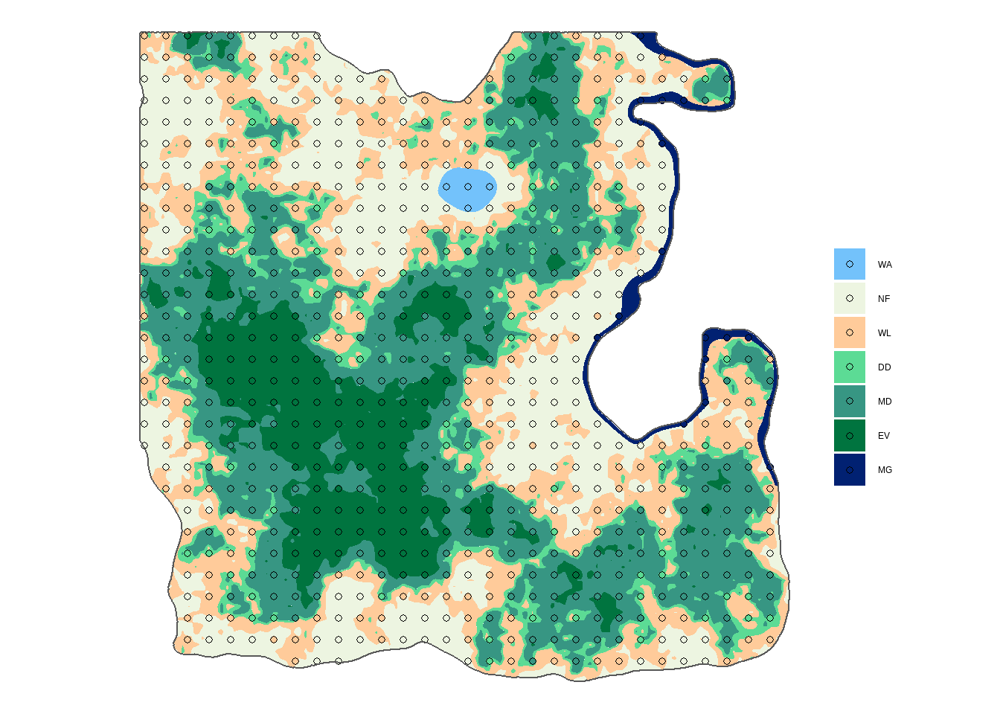

3 Systematic sampling: 3 x 3 km grid
DRAFT
This section is optional. If you wish to practice more the grid creation commands, or if you are curious to know how many forest plots we would have with a 3 x 3 km grid, complete the exercises below, otherwise you can skip directly to the next session.
In the following console boxes, create sf_point3, sf_plot3, nplot3 and nplot3_total for creating a 3 x 3 km grid (we skip the grid itself to start directly with the points):
- Points with the option
what = "center".
## Console
#### Solution
sf_points3 <- st_make_grid(sf_lc, cellsize = c(3000, 3000), what = "centers", offset = offset) %>%
st_intersection(sf_admin) %>%
st_as_sf()- Plots by joining the land cover shapefile
sf_lc.
## Console
#### Solution
sf_plot3 <- sf_points3 %>%
st_join(sf_lc) %>%
mutate(lc = fct_reorder(lc, lc_id)) %>%
filter(!is.na(lc))
- Make a map with the plots over the land cover and use our color palette
palforLoulandland covers.
## Console
#### Solution
ggplot() +
geom_sf(data = sf_lc, aes(fill = lc), color = NA) +
geom_sf(data = sf_plot3, aes(fill = lc), shape = 21) +
geom_sf(data = sf_admin, fill = NA) +
scale_fill_manual(values = pal) +
labs(fill = "", color = "") +
theme_void()
- Calculate the number of plot per land cover class using
group_by()andsummarise().
## Console
#### Solution
nplot3 <- sf_plot3 %>%
as_tibble() %>%
group_by(lc) %>%
summarise(n = n())
nplot3# A tibble: 7 x 2
lc n
<fct> <int>
1 WA 6
2 NF 172
3 WL 159
4 DD 82
5 MD 204
6 EV 103
7 MG 10
- Finally calculate the total number of plots in forest land.
## Console## Solution
nplot3_total <- nplot3 %>%
filter(!(lc %in% c("WA", "NF"))) %>%
summarise(n = sum(n))
nplot3_total# A tibble: 1 x 1
n
<int>
1 558